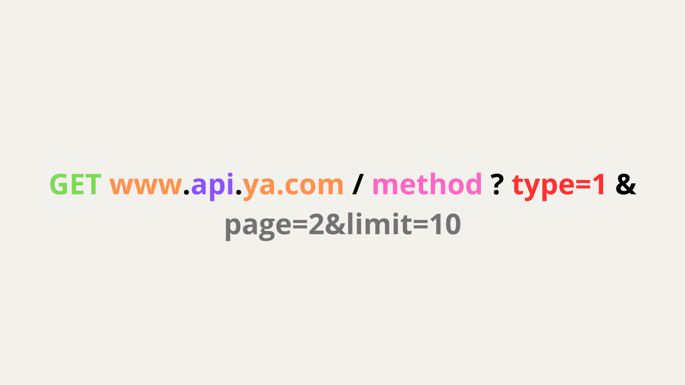

This is the most popular protocol, we will not spend to much time here
This protocol utilises HTTP(S) 2nd or 3rd generation, it consists of the following things 
- Method type - GET in this case
- GET - get info
- POST - add new info
- PUT - full update
- PATCH - partial update
- DELETE - delete
- OPTIONS - get available method types
- there are some more that are not that widely used
- URL request - *www.ya.com in this case
- Subdomain - api in this
- Endpoint - method in this case
- Query parameters - type=1 in this case
- Pagination parameters - page=2&limit=10 in this case
Body¶
For every request type (except for GET, OPTIONS and some others) you can have body Body is a payload of the request. What can be body? Well - application/xml - For xml markup - application/json - For JSON - image/png - For png - etc
How to manage it ?
It is managed in #Headers of the request, in Content-type field
Headers¶
Headers are additional data sent with a request to the server, providing key information like the content type of the request body, authentication tokens, or details about the client software. They are distinct from the request body and mainly serve to convey metadata about the request or response.
What can store headers?
- Accept: Indicates the content type that the client expects in the response.
- Content-Type: Defines the media type of the request body.
- Authorization: Provides the authentication token or credentials for the request.
- User-Agent: Identifies the software client making the request.
- Cache-Control: Controls caching behavior for both the request and response.
- If-None-Match: Makes a conditional request based on the ETag header value.